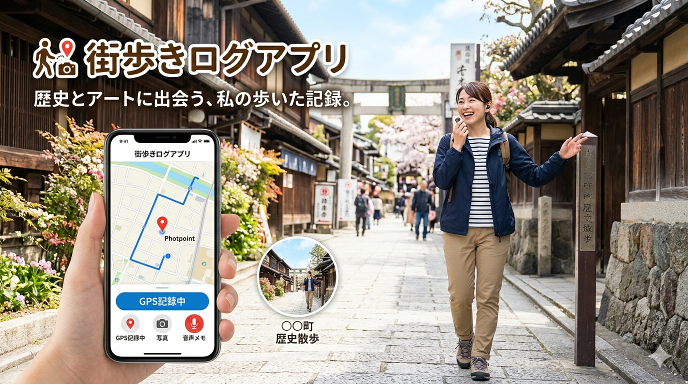

課題
街歩きのメモ、こんな悩みはありませんか？
歴史散歩やアート探索は楽しいのに、記録に手間がかかりすぎる。
よくある「記録あるある」
「あの石碑、なんて書いてあったっけ？」「この写真、どこで撮ったんだろう？」— 後から振り返ろうとしても、記録がバラバラで思い出せない。そんな経験はありませんか？
歩きながらメモが取れない
立ち止まってノートを開く余裕がない。スマホ入力も手間がかかる。
写真がどこの場所かわからない
後から写真を見返しても、どこで何を撮ったか文脈が失われている。
どこを歩いたか記録できない
散歩のルートや立ち寄った場所を後から振り返る手段がない。
思い出をまとめられない
写真・メモ・地図がバラバラで、散歩の記録として整理しにくい。
使い方
3ステップで、街歩きを記録する
歩きながら手軽に記録して、あとからゆっくり振り返る。
散歩をスタートする
アプリを開いてスタートボタンを押すだけ。GPSが自動でルートを記録し始めます。タイトル（例：「谷中歴史散歩」）を入力して出発しましょう。
GPS自動記録気になる場所で記録する
寺や史跡などのポイントに着いたら、アプリから直接カメラを起動して撮影。そのまま音声でメモを吹き込めます。写真と音声は自動で位置情報と紐付けられます。
撮影 音声メモ スポット情報取得アルバムとして仕上げる
散歩が終わったら、気に入った写真を選んでアルバムを作成。タイトルをつけて、地図・写真・メモを一冊にまとめた「街歩き記録」が完成します。
アルバム作成機能
街歩きに必要な機能を、ひとつに
記録・撮影・メモ・情報収集・アルバム作成まで、これ一本で完結。
GPSルート記録
歩いた道を自動で地図上に記録。立ち寄ったポイントもピンで表示されます。
アプリ内カメラ
アプリを閉じずに撮影できます。写真は撮影場所の位置情報と自動で紐付け。
音声メモ
歩きながら話すだけでメモが取れます。後からテキストに変換して編集も可能。
スポット情報取得
寺院・史跡・美術館などの情報をインターネットから自動取得。その場で詳細がわかります。
あとから編集
家に帰ってからでも写真の順番変更・メモの修正・テキスト入力で記録を整えられます。
アルバム作成
「○○町歴史散歩」など題名をつけて、主な写真を選んだアルバムを作成・共有できます。
アルバム
散歩の思い出を、一冊のアルバムに
写真を選んで、タイトルをつけるだけ。記録が「作品」になります。
谷中・根津歴史散歩 — 2025年春
 谷中霊園 春の桜並木
谷中霊園 春の桜並木
 古民家カフェ
古民家カフェ
 根津神社
根津神社
 谷中銀座商店街
谷中銀座商店街
 散歩した街並み
散歩した街並み
スポット情報をその場で確認
お寺や史跡などのポイントに近づくと、インターネットから詳細情報を自動取得。由来・歴史・開館時間などをその場で閲覧でき、アルバムにも情報として保存されます。知識と記録が一体になった、深い街歩き体験を実現します。
こんな方に
街歩きを楽しむすべての人へ
目的は違っても、「歩いた記録を残したい」気持ちは同じ。
歴史散歩が好きな方
お寺・史跡・古民家など、歴史的なスポットを巡りながら学びの記録を残したい。
アート・建築探索をする方
路地裏のアートや個性的な建築を発見したら、すぐに記録して後でまとめたい。
街歩き・散策が日課の方
日常の散歩をちょっと特別な体験として記録し、振り返る楽しみを持ちたい。
旅先の街を深く歩く旅人
観光地だけでなく路地も歩く旅で、見たものを丁寧に記録して旅日記にしたい。
あなたの街歩きを、もっと豊かに。
記録することで、見えてくる景色がある。
MachiLogで、街歩きの新しい楽しみ方を始めましょう。